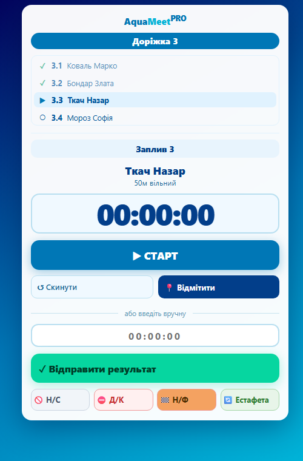

Пам’ятка судді на доріжці
AquaMeet Pro
Моя доріжка: Якщо щось не так — кличте секретаря.

Відскануйте QR-код своєї доріжкиЗвичайною камерою телефона. Реєструватись не треба. Один код — на всі запливи дня.
Перевірте номер доріжки на екраніУгорі — доріжка, прізвище учасника і дистанція. Чужа доріжка — відскануйте правильний код.
Дочекайтесь свого запливуКоли секретар оголосить заплив, він стане активним на екрані. Якщо просять — натисніть «✅ Підтвердити готовність».
СтартСекундомір запускається сам за сигналом стартера. Якщо не запустився — натисніть старт самі за сигналом.
Зупиніть час, коли плавець торкнувся стінкиДивіться на стінку, а не на телефон. Палець тримайте над кнопкою заздалегідь.
Перевірте час і натисніть «✓ Відправити результат»З’явиться «✅ Відправлено», і екран перейде до вашого наступного запливу.
Особливі випадки
🚫 Н/С — не стартувавУчасник не вийшов на старт.
🏁 Н/Ф — не фінішувавЗійшов з дистанції.
⛔ Д/К — дискваліфікаціяЛише за вказівкою рефері чи головного судді. Виберіть причину зі списку.
Помилились у часіНічого не виправляйте самі — скажіть секретарю.
Зник інтернетНе закривайте сторінку. Коли зв’язок повернеться — «Спробувати знову».
Немає мого запливу чи фіналуОновіть сторінку (потягніть екран вниз).
Головне: не закривайте сторінку до кінця змагань, тримайте телефон зарядженим, екран — не в режимі сну.
aquameet-pro.github.io/AquameetPro/help.html© AquaMeet Pro